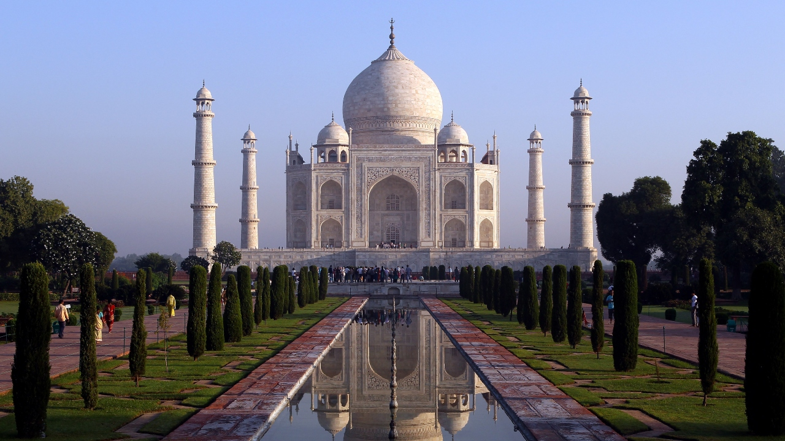

Considerado como uma das mais importantes construções da História da Humanidade, o Taj Mahal tem por de trás de suas edificações uma impressionante história. Durante o governo do imperador mongol Shah Jahan, houve um período de grande prosperidade material na Índia, sendo que os recursos acumulados durante esse governo permitiram a construção de vários jardins e edifícios. Na condição de monarca, Shah Jahan tinha várias esposas, mas Aryumand Banu Begam era, sem dúvida, a mais amada.